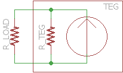
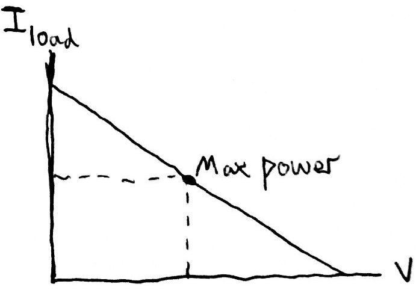
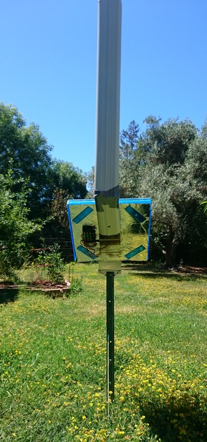
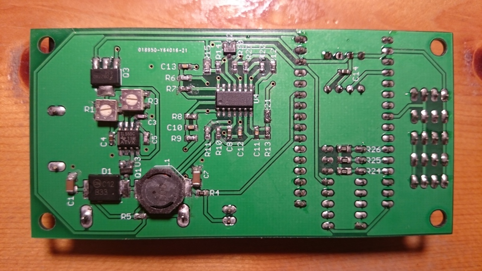
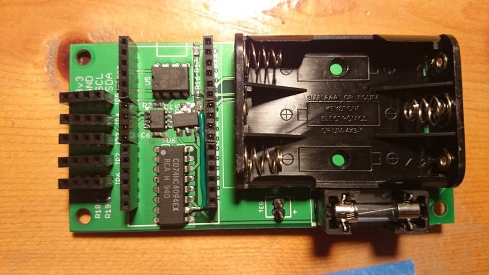

Solar Thermoelectric Generator (TEG) Power Harvesting and Temperature Monitoring
Project Motivation
This project was born out of an earlier project, a stand-alone, PV-powered, solar tracker. AS plans for a second, improved solar tracker ran through my head, other ideas started to swirl around. Long story short, plans for a moving PV system turned into plans for a kinematically-static TEG powered by the sun, a far cry from the original idea.
TEG Operating Principles
A TEG operates on the thermoelectric effect. It's the same phenomenon as peltier coolers or thermocouples. The TEG can be modeled as a current source with a parallel resistance, R_TEG. Usable power generation is from current through the external R_LOAD. Assuming an effectively constant total current across all possible loads, maximum power is harvested when R_LOAD = R_TEG.

Model Schematic.

Possible TEG operating points, associated with changing R_load. Maximum power is at half of maximum current, which means that at maximum power the same amount of current must also pass though the internal resistance. The voltage is also the same, therefore load resistance and internal resistance are equal as well.
Power Harvesting Principles
Converting low-voltage power from the TEG to a useful storage voltage ( 0.5v to 3.5-4.5v in this case) requires a boosting DC DC converter. Since the external load resistance is equal to internal resistance for the TEG to generate maximum power, a fixed frequency, fixed duty cycle converter can be designed to effectively operate the TEG at maximum useful power. Math shows that the ideal fixed cycle converter only perfectly maintains a constant load across TEG operating powers (different TEG temperature differentials) if buck-boost switching is used, however a fixed cycle boost-only topology maintains a close enough load for the efficiency needs of this project, so a fixed cycle boost converter was used to simplify converter implementation.
Project Construction
The thermoelectric unit must be given a thermal differential. For this project, the hot side is a foot-square insulated aluminum plate with a flat black surface for absorbing sunlight. The cold side is a large CPU heatsink with a chimney to passively increase airflow. Power harvesting, system temperature sensing, and relaying of data to Sparkfun's data logging website are integrated onto a single board that is mounted to the back of the collector plate. In current operation, the collector plate is mounted to a post, and the cooling chimney rises up from the back of the collector plate.

TEG system in working environment, seen from back.

TEG system pcb bottom, with DC DC converter.

TEG system pcb top, with battery holder and socket for Red Bear Lab's Wifi Mini MCU board.